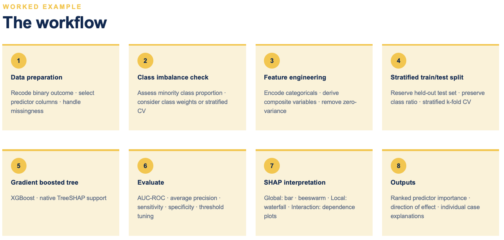
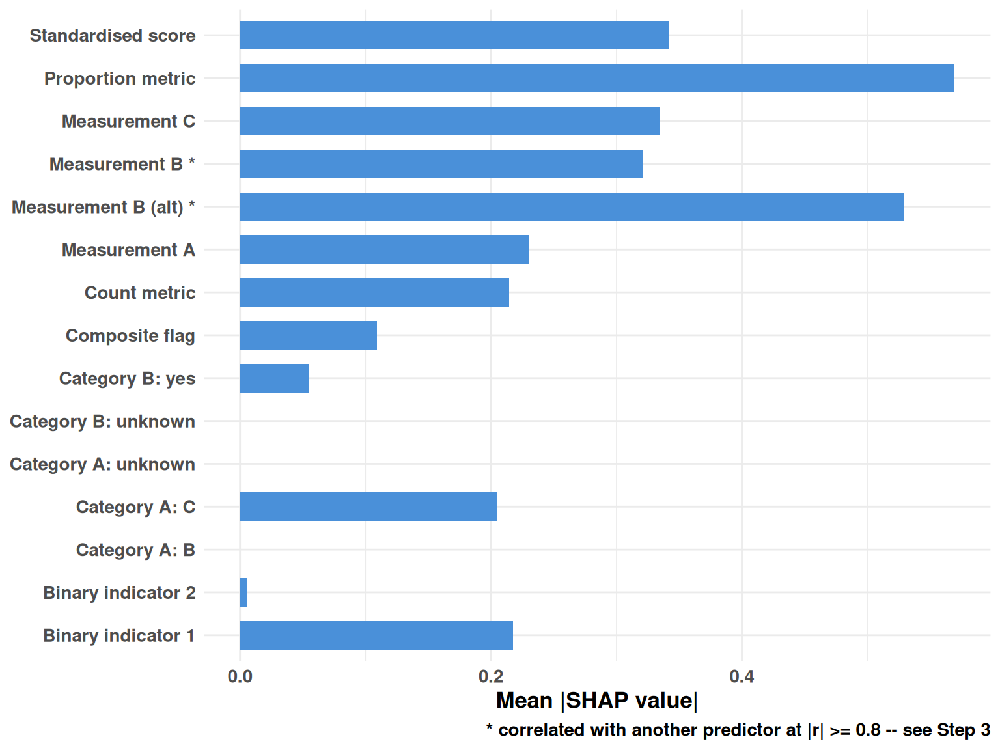
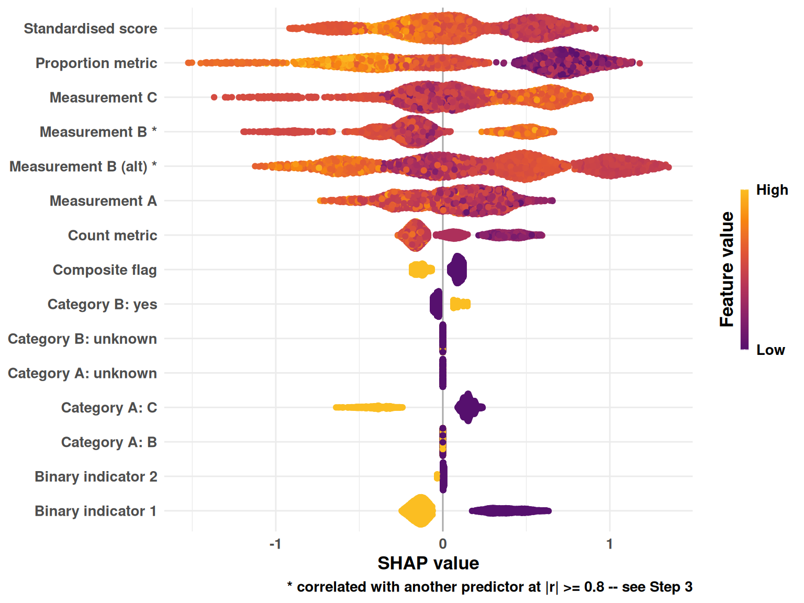
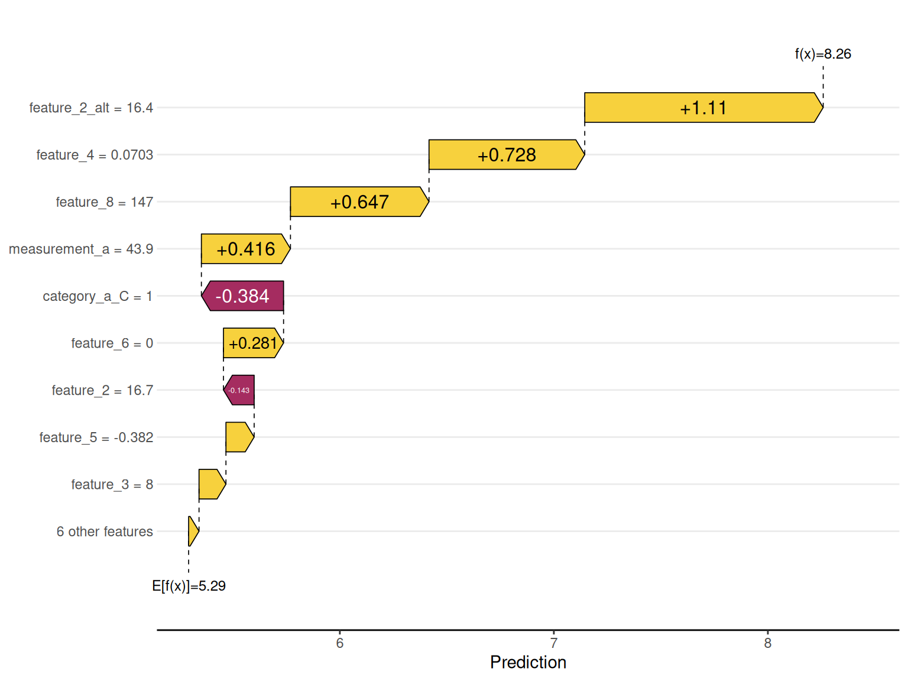

Code
library(tidyverse) # for data cleaning
library(tidymodels) # to keep track of models
library(xgboost) # to fit the models
library(shapviz) # to extract the SHAP valueseStructured around the 8-step pipeline, demonstrated on simulated data
Gina Charnley
September 2, 2026
This tutorial documents a general-purpose workflow for identifying risk factors in tabular data using gradient-boosted trees (XGBoost) and SHAP (SHapley Additive exPlanations). It’s organised around the eight-step pipeline below, using the simulated data created in Session 1. These steps and the data involved, although artificially generated, have been created to highlight a range of issues that commonly occur in data cleaning and model fitting.

The simulation below is deliberately messy in the same ways real project data tends to be: a mix of numeric and categorical predictors, missing values with different mechanisms (missing-at-random vs. “not asked”), a redundant pair of near-duplicate predictors, a zero-variance column, a “volume marker” that correlates with everything but isn’t causal, and a rare binary outcome. Every one of these quirks is deliberately created so the later sections have something real to demonstrate.
set.seed(42)
n <- 2000
sim_data <- tibble(
record_id = seq_len(n),
site_id = sample(paste0("site_", 1:20), n, replace = TRUE),
category_a = sample(c("A", "B", "C", NA), n, replace = TRUE,
prob = c(0.40, 0.35, 0.20, 0.05)),
category_b = sample(c("yes", "no", NA), n, replace = TRUE,
prob = c(0.30, 0.60, 0.10)),
feature_1 = rnorm(n, mean = 50, sd = 10),
feature_2 = rnorm(n, mean = 20, sd = 5),
feature_3 = rpois(n, lambda = 4),
feature_4 = runif(n, 0, 1),
feature_5 = rnorm(n, mean = 0, sd = 1),
feature_6 = rbinom(n, 1, 0.3),
feature_7 = rbinom(n, 1, 0.15),
feature_8 = rnorm(n, mean = 100, sd = 30),
activity_level = rpois(n, lambda = 50)
) |>
mutate(
# feature_2_alt is a near-duplicate of feature_2 — a redundant pair
feature_2_alt = feature_2 + rnorm(n, 0, 0.5),
# constant_col has zero variance and should be dropped
constant_col = 1,
# a "volume marker": correlates with other features via site activity,
# but isn't itself a causal risk factor (mirrors things like reporting
# volume or facility throughput in real administrative data)
feature_3 = feature_3 + round(activity_level / 10),
feature_6 = if_else(runif(n) < activity_level / 100, 1, feature_6),
# composite source flags, each with some missingness — analogous to
# sub-items that get combined into one derived indicator
flag_x1 = sample(c(0, 1, NA), n, replace = TRUE, prob = c(0.70, 0.20, 0.10)),
flag_x2 = sample(c(0, 1, NA), n, replace = TRUE, prob = c(0.80, 0.10, 0.10)),
flag_x3 = sample(c(0, 1, NA), n, replace = TRUE, prob = c(0.75, 0.15, 0.10)),
# missing-at-random numeric predictors — will need imputation, not zero-fill
feature_1 = if_else(runif(n) < 0.05, NA_real_, feature_1),
feature_8 = if_else(runif(n) < 0.05, NA_real_, feature_8)
)
# Outcome: a rare binary event, generated as a logistic function of a few
# informative predictors plus noise, so imbalance handling has real work to do
lin_pred <- with(sim_data,
-4.2 +
0.03 * (feature_1 - 50) +
0.15 * feature_5 +
0.80 * feature_6 +
-0.02 * (feature_8 / 10) +
1.10 * coalesce(category_a == "C", FALSE)
)
prob_event <- plogis(coalesce(lin_pred, -4.2))
sim_data <- sim_data |>
mutate(outcome = factor(rbinom(n, 1, prob_event),
levels = c(0, 1), labels = c("no_event", "event")))
cat("Simulated", nrow(sim_data), "rows;", "event rate:",
round(mean(sim_data$outcome == "event") * 100, 1), "%\n")Simulated 2000 rows; event rate: 3 %This tutorial is written for a binary outcome — an event that either happened or didn’t. Real data doesn’t always arrive that way: it’s common for the raw outcome to start as a count or a continuous measure and need recoding to binary first. Worth doing when:
This isn’t free: dichotomising a continuous outcome throws away real variation and can be sensitive to where the cutoff is drawn, so it should be a deliberate choice tied to one of the reasons above, not a default.
In this tutorial, outcome was already simulated as binary (in “Simulated dataset”, above) to keep the focus on the modelling pipeline rather than the recoding step itself. On a real project, this is where that decision gets made and applied, e.g.:
# A tibble: 6 × 3
site_id case_count outcome
<int> <dbl> <fct>
1 1 0 no_event
2 2 0 no_event
3 3 3 event
4 4 0 no_event
5 5 1 event
6 6 0 no_eventSource systems often store variables under opaque codes (database IDs, survey question codes) rather than readable names. Start by listing the columns so you can spot the unintuitive ones:
[1] "record_id" "site_id" "category_a" "category_b"
[5] "feature_1" "feature_2" "feature_3" "feature_4"
[9] "feature_5" "feature_6" "feature_7" "feature_8"
[13] "activity_level" "feature_2_alt" "constant_col" "flag_x1"
[17] "flag_x2" "flag_x3" "outcome" feature_1 is standing in for that kind of opaque code here — rename it once, for real, and every later step (the recipe, the SHAP labels, the outputs) then just uses the new name:
Renaming several columns at once works the same way with a named lookup vector and
rename_with():rename_with(sim_data, ~ lookup[.x], .cols = any_of(names(lookup))).
Explicitly separate identifiers, the outcome, and predictors before doing anything else — this list is what every later select()/recipe call should reference, so it only needs to be defined once.
Summarise missingness per column before deciding how to handle it. The key judgement call: does missing mean a true zero / absence (e.g. an event count that was never recorded because nothing happened), in which case replace_na(0) is correct — or does missing mean unknown (e.g. a survey question that wasn’t answered), in which case zero-filling would silently bias the model and imputation (numeric) or an explicit "unknown" factor level (categorical) is the safer choice.
# A tibble: 16 × 2
variable pct_missing
<chr> <dbl>
1 flag_x2 10.9
2 flag_x3 10.8
3 category_b 9.9
4 flag_x1 9.7
5 category_a 5.6
6 measurement_a 5.3
7 feature_8 4.3
8 feature_2 0
9 feature_3 0
10 feature_4 0
11 feature_5 0
12 feature_6 0
13 feature_7 0
14 activity_level 0
15 feature_2_alt 0
16 constant_col 0 In this simulated dataset, measurement_a/feature_8 are missing-at-random (→ impute later, in the recipe) and category_a/category_b/the flag_* columns are “not recorded” (→ explicit unknown level / composite-flag logic below). Neither is zero-filled here, since none of these represent a genuine structural zero — but if you’re working with count data where missing really does mean zero, that step belongs here:
Check the minority class proportion before doing any predictor engineering — the right choice for a near-balanced outcome (this dataset’s original feature_6/feature_7, say) is very different from the right choice for a rare event like outcome here.
Class counts — no_event: 1940 event: 60 Event prevalence: 3 %Imbalance ratio (majority:minority): 32.3 :1# sqrt of the ratio is a common, less aggressive alternative to the raw
# ratio for XGBoost's scale_pos_weight — it upweights the minority class
# without letting it dominate the loss entirely
weight_ratio <- sqrt(n_majority / n_minority)
cat("scale_pos_weight (sqrt of ratio):", round(weight_ratio, 2), "\n")scale_pos_weight (sqrt of ratio): 5.69 As a rule of thumb: near-balanced outcomes (roughly 40:60 or better) often need nothing more than a stratified split. Moderate imbalance (up to ~10:1) usually benefits from scale_pos_weight. Severe imbalance (50:1 and beyond, as here) needs both scale_pos_weight and deliberate threshold tuning in Step 6 — a default 0.5 cutoff will predict the majority class for almost everyone.
Where several sub-items measure related sub-components of one underlying concept, it’s often cleaner to combine them into a single derived flag than to feed the model each sub-item separately. The pattern below is NA only when every contributing item is missing; otherwise it’s 1 if any contributing item was positive:
sim_data <- sim_data |>
mutate(
flag_any = if_else(
rowSums(!is.na(across(c(flag_x1, flag_x2, flag_x3)))) == 0,
NA_real_,
if_else(rowSums(across(c(flag_x1, flag_x2, flag_x3), ~ . == 1),
na.rm = TRUE) > 0, 1, 0)
)
) |>
select(-flag_x1, -flag_x2, -flag_x3)
# predictor_cols was fixed in Step 1, before flag_any existed and before
# flag_x1/x2/x3 were dropped — refresh it so it matches sim_data's current
# columns before anything downstream references it
predictor_cols <- setdiff(names(sim_data), c(id_cols, outcome_col))XGBoost is fairly robust to multicollinearity for prediction, and a variable with a weak marginal correlation to the outcome can still matter in combination with others (a classic suppressor-variable situation), so dropping one member of a correlated pair purely on a pre-model correlation statistic risks throwing away real signal. Instead, every predictor stays in the modelling frame, and correlated pairs are flagged for a cautious read once real SHAP values exist — if two highly-correlated predictors both turn up as top predictors, that’s shared attribution across a real correlation, not necessarily two independent risk factors. The flagging itself happens directly on the plots in Step 7; this just computes what to flag.
Zero-variance columns: constant_col # Correlation matrix over numeric predictors only — categorical
# association would need a different measure (e.g. Cramer's V) and
# isn't covered here
numeric_predictors <- sim_data |>
select(all_of(predictor_cols)) |>
select(where(is.numeric)) |>
names()
cor_matrix <- sim_data |>
select(all_of(numeric_predictors)) |>
cor(use = "pairwise.complete.obs")
# Every pair worth keeping in mind when reading SHAP later. Nothing
# gets dropped from this — it's carried through to Step 7 purely to
# flag bars/points on the importance plots, not to shrink predictor_cols
high_cor_pairs <- as_tibble(cor_matrix, rownames = "var1") |>
pivot_longer(-var1, names_to = "var2", values_to = "r") |>
filter(var1 < var2, abs(r) >= 0.5) |>
arrange(desc(abs(r)))
print(high_cor_pairs)# A tibble: 1 × 3
var1 var2 r
<chr> <chr> <dbl>
1 feature_2 feature_2_alt 0.995Some columns proxy the size or activity level of a unit (a site, a zone, a respondent’s exposure to the health system) rather than being a risk factor in their own right. They tend to show up as spuriously important in SHAP if left in, so it’s worth identifying and dropping them deliberately, with the reasoning recorded:
volume_markers <- c("activity_level") # correlates with feature_3/feature_6 by construction, not causal
zero_variance <- constant_cols # e.g. "constant_col"
vars_to_drop <- c(volume_markers, zero_variance)
predictor_cols <- predictor_cols[!predictor_cols %in% vars_to_drop]
cat("Predictors after dropping volume markers / zero-variance columns:",
length(predictor_cols), "\n")Predictors after dropping volume markers / zero-variance columns: 12 [1] "category_a" "category_b" "measurement_a" "feature_2"
[5] "feature_3" "feature_4" "feature_5" "feature_6"
[9] "feature_7" "feature_8" "feature_2_alt" "flag_any" Categorical encoding (step_dummy), unseen-level handling (step_novel), and explicit missing-level handling (step_unknown) are also feature engineering, but are implemented inside the modelling recipe in Step 5 rather than here — that keeps them tied to the train/test split so no information leaks from test into train.
Modelling frame: 2000 rows x 15 columnsStratifying on the outcome — for both the initial split and every CV fold — keeps the class ratio consistent across train, test, and every fold, which matters more the rarer the event is.
Train: 1600 Test: 400 Train event rate: 2.88 %Test event rate: 3.5 %The recipe encodes categoricals, handles unseen factor levels and explicit missingness, imputes the numeric columns that are missing-at-random, and drops any residual zero-variance columns as a safety net. Identifier columns are given an "ID" role so they’re carried through without being treated as predictors.
xgb_recipe <- recipe(outcome ~ ., data = train_data) |>
update_role(all_of(id_cols), new_role = "ID") |>
step_novel(all_nominal_predictors()) |>
step_unknown(all_nominal_predictors()) |>
step_dummy(all_nominal_predictors()) |>
step_impute_median(measurement_a, feature_8) |>
step_zv(all_predictors())
xgb_spec <- boost_tree(
trees = 500,
tree_depth = 4,
learn_rate = 0.05,
loss_reduction = 0.01,
min_n = 10
) |>
set_engine("xgboost", scale_pos_weight = weight_ratio) |>
set_mode("classification")
xgb_workflow <- workflow() |>
add_recipe(xgb_recipe) |>
add_model(xgb_spec)Make a note of the tuning parameters in lines 429-434. These should be published alongside your model for reproducability. All of these can be changed, and can be explored manually or with a grid search. Sometimes it can be helpful to fit them with the default values, assess model fit, and then tune if needed to extract additional predictive power from your model set up.
# A tibble: 2 × 6
.metric .estimator mean n std_err .config
<chr> <chr> <dbl> <int> <dbl> <chr>
1 average_precision binary 0.982 10 0.00428 pre0_mod0_post0
2 roc_auc binary 0.661 10 0.0431 pre0_mod0_post0With a rare outcome, model probabilities are calibrated to population prevalence, so the default 0.5 cutoff is nearly always wrong. Start the threshold near prevalence, then sweep a small grid to find the best sensitivity/specificity/F1 trade-off for your use case:
threshold <- n_minority / (n_minority + n_majority)
cv_preds <- collect_predictions(cv_results) |>
mutate(.pred_class = factor(
if_else(.pred_event >= threshold, "event", "no_event"),
levels = c("no_event", "event")
))
pooled_metrics <- bind_rows(
roc_auc(cv_preds, truth = outcome, .pred_event, event_level = "second"),
average_precision(cv_preds, truth = outcome, .pred_event, event_level = "second"),
sensitivity(cv_preds, truth = outcome, estimate = .pred_class, event_level = "second"),
specificity(cv_preds, truth = outcome, estimate = .pred_class, event_level = "second"),
ppv(cv_preds, truth = outcome, estimate = .pred_class, event_level = "second"),
npv(cv_preds, truth = outcome, estimate = .pred_class, event_level = "second")
)
print(pooled_metrics)# A tibble: 6 × 3
.metric .estimator .estimate
<chr> <chr> <dbl>
1 roc_auc binary 0.648
2 average_precision binary 0.0559
3 sensitivity binary 0.0652
4 specificity binary 0.974
5 ppv binary 0.0682
6 npv binary 0.972 thresholds <- c(0.02, 0.05, 0.1, 0.15, 0.2, 0.3, 0.5)
threshold_comparison <- map_dfr(thresholds, function(thresh) {
cv_preds_t <- collect_predictions(cv_results) |>
mutate(.pred_class = factor(
if_else(.pred_event >= thresh, "event", "no_event"),
levels = c("no_event", "event")
))
tibble(
threshold = thresh,
sensitivity = sensitivity_vec(cv_preds_t$outcome, cv_preds_t$.pred_class, event_level = "second"),
specificity = specificity_vec(cv_preds_t$outcome, cv_preds_t$.pred_class, event_level = "second"),
ppv = ppv_vec(cv_preds_t$outcome, cv_preds_t$.pred_class, event_level = "second"),
f1 = f_meas_vec(cv_preds_t$outcome, cv_preds_t$.pred_class, event_level = "second")
)
})
print(threshold_comparison)# A tibble: 7 × 5
threshold sensitivity specificity ppv f1
<dbl> <dbl> <dbl> <dbl> <dbl>
1 0.02 0.0652 0.952 0.0390 0.0488
2 0.05 0.0217 0.990 0.0588 0.0317
3 0.1 0.0217 0.997 0.167 0.0385
4 0.15 0 0.999 0 0
5 0.2 0 0.999 0 0
6 0.3 0 1 NaN NA
7 0.5 0 1 NaN NA Selected threshold: 0.02 final_fit <- fit(xgb_workflow, data = train_data)
test_preds <- augment(final_fit, test_data) |>
mutate(.pred_class = factor(
if_else(.pred_event >= threshold, "event", "no_event"),
levels = c("no_event", "event")
))
test_summary <- bind_rows(
roc_auc(test_preds, truth = outcome, .pred_event, event_level = "second"),
sensitivity(test_preds, truth = outcome, estimate = .pred_class, event_level = "second"),
specificity(test_preds, truth = outcome, estimate = .pred_class, event_level = "second"),
ppv(test_preds, truth = outcome, estimate = .pred_class, event_level = "second"),
npv(test_preds, truth = outcome, estimate = .pred_class, event_level = "second"),
f_meas(test_preds, truth = outcome, estimate = .pred_class, event_level = "second")
)
print(test_summary)# A tibble: 6 × 3
.metric .estimator .estimate
<chr> <chr> <dbl>
1 roc_auc binary 0.551
2 sensitivity binary 0.0714
3 specificity binary 0.951
4 ppv binary 0.0500
5 npv binary 0.966
6 f_meas binary 0.0588 Truth
Prediction no_event event
no_event 367 13
event 19 1Before reading importance off the plots below, check high_cor_pairs from Step 3 for any surviving predictors that were moderately correlated but not dropped for other reasons. If two such predictors both show up with modest importance, that may be shared attribution across a real correlation rather than two independently important risk factors. The plots below mark this directly — any feature that’s part of a pair at or above redundancy_cutoff gets a * next to its label — so it’s visible in the moment you’re reading the ranking, not just a footnote you have to remember to go check.
xgb_model <- extract_fit_engine(final_fit)
train_baked <- xgb_recipe |>
prep() |>
bake(new_data = train_data) |>
# ID-role columns survive baking as ordinary columns even though the
# model was never trained on them — drop them (and the outcome) by name
# so the matrix matches the columns xgb_model actually expects
select(-all_of(id_cols), -outcome) |>
as.matrix()
shp <- shapviz(xgb_model, X_pred = train_baked)Apply a label lookup at plotting time only, so the underlying matrix column names (which shapviz relies on internally) stay untouched. For a project with many predictors, extend feature_labels to cover all of them.
feature_labels <- c(
measurement_a = "Measurement A",
feature_2 = "Measurement B",
feature_2_alt = "Measurement B (alt)",
feature_3 = "Count metric",
feature_4 = "Proportion metric",
feature_5 = "Standardised score",
feature_6 = "Binary indicator 1",
feature_7 = "Binary indicator 2",
feature_8 = "Measurement C",
flag_any = "Composite flag",
category_a_B = "Category A: B",
category_a_C = "Category A: C",
category_a_unknown = "Category A: unknown",
category_b_yes = "Category B: yes",
category_b_unknown = "Category B: unknown"
)
present_labels <- feature_labels[names(feature_labels) %in% colnames(shp$X)]
# Features involved in a pair at or above redundancy_cutoff (Step 3) —
# flagged on the plots below rather than dropped from the model
flagged_pairs <- high_cor_pairs |> filter(abs(r) >= redundancy_cutoff)
flagged_raw <- unique(c(flagged_pairs$var1, flagged_pairs$var2))
# Renamed label, with a warning marker appended for flagged features —
# used everywhere a feature name reaches a plot, so the flag shows up
# consistently on the bar chart, beeswarm, dependence plots and waterfall
label_flagged <- function(raw_names) {
human <- dplyr::recode(raw_names, !!!present_labels)
if_else(raw_names %in% flagged_raw, paste0(human, " *"), human)
}
# Same flag, as a lookup rather than a plot marker — for the exported
# tables in Step 8, where a `correlated_with` column is more useful than
# an emoji baked into the feature name
correlated_partners <- function(raw_names) {
vapply(raw_names, function(nm) {
partners <- c(flagged_pairs$var2[flagged_pairs$var1 == nm],
flagged_pairs$var1[flagged_pairs$var2 == nm])
if (length(partners) == 0) return(NA_character_)
paste(dplyr::recode(partners, !!!present_labels), collapse = "; ")
}, character(1), USE.NAMES = FALSE)
}
shp_renamed <- shp
colnames(shp_renamed$X) <- label_flagged(colnames(shp_renamed$X))
colnames(shp_renamed$S) <- label_flagged(colnames(shp_renamed$S))p <- sv_importance(shp, kind = "bar")
p$layers[[1]]$aes_params$fill <- "#4A90D9"
p$data$feature <- label_flagged(as.character(p$data$feature))
p + theme_minimal() +
theme(text = element_text(size = 13, face = "bold")) +
labs(x = "Mean |SHAP value|", y = NULL,
caption = if (length(flagged_raw) > 0)
paste0("* correlated with another predictor at |r| >= ", redundancy_cutoff,
" -- see Step 3") else NULL)
b <- sv_importance(shp, kind = "beeswarm")
b$data$feature <- label_flagged(as.character(b$data$feature))
b + theme_minimal() +
theme(text = element_text(size = 13, face = "bold")) +
labs(x = "SHAP value", y = NULL,
caption = if (length(flagged_raw) > 0)
paste0("* correlated with another predictor at |r| >= ", redundancy_cutoff,
" -- see Step 3") else NULL)
Showing every predictor gets unwieldy once you have more than a handful — in practice, subset to the top N by importance:
Waterfall plots explain one prediction at a time — typically used on a case of particular interest, e.g. the highest-risk case in the test set:

The end product of Steps 1–7 is a set of reusable outputs: a ranked predictor importance table, the direction of each predictor’s effect, and individual case explanations — typically exported for reporting rather than kept only as plot objects.
# Ranked importance table — correlated_with carries the Step 3 flag
# into the export, so the caution survives outside of R too
shap_importance <- sv_importance(shp, kind = "bar", max_display = length(predictor_cols))$data |>
mutate(
correlated_with = correlated_partners(as.character(feature)),
feature = dplyr::recode(as.character(feature), !!!present_labels)
) |>
select(feature, mean_abs_shap = value, correlated_with) |>
arrange(desc(mean_abs_shap))
write_csv(shap_importance, "shap_importance.csv")
print(shap_importance) feature mean_abs_shap correlated_with
feature_4 Proportion metric 0.56965879 <NA>
feature_2_alt Measurement B (alt) 0.52928323 Measurement B
feature_5 Standardised score 0.34220237 <NA>
feature_8 Measurement C 0.33466565 <NA>
feature_2 Measurement B 0.32070188 Measurement B (alt)
measurement_a Measurement A 0.23074569 <NA>
feature_6 Binary indicator 1 0.21756204 <NA>
feature_3 Count metric 0.21460669 <NA>
category_a_C Category A: C 0.20454215 <NA>
flag_any Composite flag 0.10913052 <NA>
category_b_yes Category B: yes 0.05460931 <NA>
feature_7 Binary indicator 2 0.00567197 <NA># Direction of effect: mean signed SHAP value per feature (positive =
# pushes prediction toward "event" on average)
shap_direction <- as_tibble(shp$S) |>
summarise(across(everything(), mean)) |>
pivot_longer(everything(), names_to = "feature", values_to = "mean_signed_shap") |>
mutate(
correlated_with = correlated_partners(feature),
feature = dplyr::recode(feature, !!!present_labels)
) |>
arrange(desc(abs(mean_signed_shap)))
write_csv(shap_direction, "shap_direction.csv")
print(shap_direction)# A tibble: 15 × 3
feature mean_signed_shap correlated_with
<chr> <dbl> <chr>
1 Measurement B (alt) 0.222 Measurement B
2 Proportion metric 0.155 <NA>
3 Measurement B -0.112 Measurement B (alt)
4 Measurement C 0.0998 <NA>
5 Standardised score 0.0835 <NA>
6 Measurement A 0.0434 <NA>
7 Category A: C 0.0341 <NA>
8 Count metric 0.0312 <NA>
9 Binary indicator 1 0.0275 <NA>
10 Composite flag 0.00351 <NA>
11 Category B: yes 0.000715 <NA>
12 Binary indicator 2 0.0000545 <NA>
13 Category A: B 0 <NA>
14 Category A: unknown 0 <NA>
15 Category B: unknown 0 <NA> # Individual case explanation, exported alongside the model's prediction
case_explanation <- as_tibble(shp$S[highest_risk_idx, , drop = FALSE]) |>
pivot_longer(everything(), names_to = "feature", values_to = "shap_value") |>
mutate(
correlated_with = correlated_partners(feature),
feature = dplyr::recode(feature, !!!present_labels)
) |>
arrange(desc(abs(shap_value)))
write_csv(case_explanation, "case_explanation_example.csv")
print(case_explanation)# A tibble: 15 × 3
feature shap_value correlated_with
<chr> <dbl> <chr>
1 Measurement B (alt) 1.11 Measurement B
2 Proportion metric 0.728 <NA>
3 Measurement C 0.647 <NA>
4 Measurement A 0.416 <NA>
5 Category A: C -0.384 <NA>
6 Binary indicator 1 0.281 <NA>
7 Measurement B -0.143 Measurement B (alt)
8 Standardised score 0.132 <NA>
9 Count metric 0.126 <NA>
10 Composite flag 0.0812 <NA>
11 Category B: yes -0.0339 <NA>
12 Binary indicator 2 0.00116 <NA>
13 Category A: B 0 <NA>
14 Category A: unknown 0 <NA>
15 Category B: unknown 0 <NA> Checklist for reusing this document on a real project, in the order you’ll hit the decisions:
id_cols and outcome_col; decide per-column whether missing means zero (replace_na(0)) or unknown (leave as NA, impute/flag downstream).scale_pos_weight and/or threshold tuning are needed.redundancy_cutoff (0.8 is a reasonable starting point, not a universal rule) — nothing gets dropped here, it only sets what Step 7 flags on the plots; identify and drop any “volume marker” columns that proxy size/activity rather than risk.strata = <outcome column>.tree_depth/learn_rate/trees for your dataset sizeroc_auc/average_precision/…) if a different pair suits your use case; re-run the threshold sweep.feature_labels to cover all of your predictors (including any dummy-encoded categorical levels); choose how many features to show in the dependence plots based on how many you have.